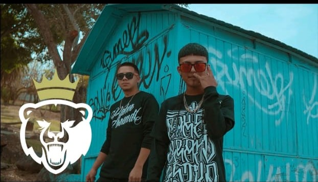
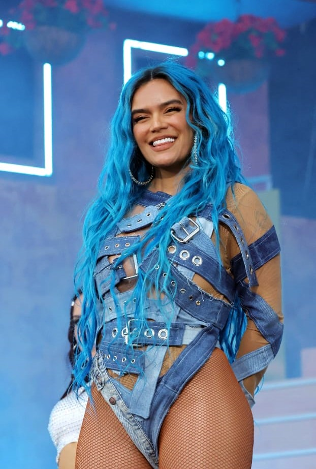
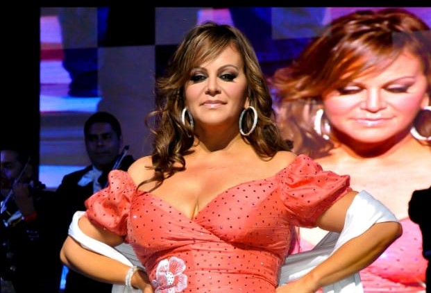

| ºN | Nombre | Imagen | Descripción |
|---|---|---|---|
| 1 | Santa Fe Klan | santa fe klan es uno de mis mas grandes artistas favoritos,ya que su musica es del genero (Rap) me gusta mucho su musica ya que en sus canciones habla de su vida de todo lo que ah vivido, a parte de crear musica,es el muy humilde ayuda a las personas de su colonia, su forma de ser es como de una persona comun a pesar de que tiene mucha fama el siempre es humilde con todas las personas. | |
| 2 | Santa Grifa |  | santa grifa al igual que santa fe me gustan mucho sus canciones ya que de igual forma habla de su vida y le compone canciones a sus amigos, su musica tambien es muy buena aunque pues no a todo mundo le gusta su musica ya se les hace muy groseras algunas letras. |
| 3 | Karol G |  | karol g, hasta el dia de hoy es una artista del genero (urbano), su musica es escuchada por muchas personas en el mundo tambien considero que su musica es muy buena, pero cada quien tiene sus propios gusto y karo g esta entre una de mis artista favoritas |
| 4 | Jenny Rivera |  | jenny rivera su musica es el genero (banda) a pesar de que la artista hace tiempo que fallecio, me eh considerado una de sus fans, ya que en epocas atras no la conoci,su musica me gusta mucho. |